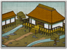

Requires
- Buildings: 
Enables
- Buildings:

- Units:


Spawned Garrisons
- Units:
Basic Building Statistics (can be modified by difficulty level, arts, skills, traits and retainers)
- Cost: 1440
- +4 to repression in this province
- +4% to the replenishment rate in this province
- Recruitment capacity (units in training): +2
Description
The man who defends his lord also defends his home.
A muster field improves the number of men who are toughened up for military service, meaning that more units can be recruited in a province: a little discipline among civilians is no bad thing. This also helps with sending replenishment troops to understrength units. A town watch traditionally keeps the lower classes in order and watches for fires. It is also an excellent training for warriors: they learn to obey orders as well as fight. At the very least, the town watch learn such military skills as obedience, how to form ranks, stand to arms, and prepare to receive an attack. All of these are useful: if men do not act as a well-ordered unit, they will die as a disorganised mob. They may well kill many of the enemy as they die, but they will act ineffectively, not as a piece of the whole army and adding to its collective strength.